Skills
About Me
A Geography and Environmental Science professional passionate about using GIS and data to solve real-world environmental problems. My work focuses on flood resilience, sustainable development, and community-centred mapping. I've co-founded WAFARI, led mapathons across Africa, and engaged in hands-on fieldwork, environmental research, and youth advocacy. I'm driven by a commitment to sustainability and practical, lasting change.
Professional Expertise & Certifications
Core Skill Proficiency
Core Competencies
- Environmental and Spatial Landscape Planning
- GIS Applications
- Disaster Risk Reduction & Climate Adaptation
- Flood Resilience Mapping & Community Engagement
- Land-Use Change Monitoring
- Youth Advocacy & Public Awareness Campaigns
Qualifications & Certifications
- BSc Geography & Environmental Sciences — University of Pretoria
- ISO 14001: Environmental Management Systems — Alison
- ISO 45001: Occupational Health & Safety — Alison
- Climate Change & Flood Risk Reduction — UNCC Learn
- Environmental Impact Assessment — Alison
Key Projects & Contributions
2023
Water From a Rock Initiative (WAFARI)
Co-founded youth-led project enhancing flood resilience across Africa - winner of the 2023 Global Integrated Flood & Drought Management Competition.
2023
GIBS Experience Day
Engaged with senior professionals on leadership, strategic thinking, and professional development at the Gordon Institute of Business Science.
2024
Tongaat Tornado Mapathon
Co-organised humanitarian mapping session with YouthMappers UP using HOT Tasking Manager to support KwaZulu-Natal disaster response.
2024
Stream Discharge Field Study
Collected and analysed hydrological data at Olifantspruit to model catchment discharge dynamics.
2024
Hydromulch Site Visit
Explored erosion control technologies for agriculture and construction; connected theory to industry application.
Key Concepts in My Work
- Environmental Sustainability
- Finding practical ways to protect nature while supporting community needs and long-term development.
- GIS (Geographic Information Systems)
- Using maps and spatial data to analyse, visualise, and communicate complex environmental problems.
- Remote Sensing
- Tracking environmental change through satellite and aerial imagery - from land cover shifts to flood extents.
- Disaster Risk Reduction
- Helping vulnerable communities prepare for floods and hazards through mapping, education, and early warning tools.
- Land-Use Planning
- Making informed decisions about how land is used to minimise harm and support sustainable, equitable growth.
- Community Resilience
- Working with people - not just data - because resilience starts with informed and empowered communities.
"You cannot protect the environment unless you empower people, you inform them, and you help them understand that these resources are their own."
— Wangari Maathai🔑 Key Projects Overview
| Project | Description | Year |
|---|---|---|
| WAFARI | Youth-led project enhancing flood resilience through mapping, education, and community outreach across Africa. | 2023 |
| Stream Discharge Field Study | Collected and analysed streamflow data to understand hydrological patterns at Olifantspruit. | 2024 |
| Tongaat Tornado Mapathon | Led humanitarian mapping using HOT OSM tools to support KwaZulu-Natal disaster response. | 2024 |
| Hydromulch Site Visit | Explored erosion control technologies applied in agriculture and construction. | 2024 |
| Kartoza Internship | Applied open-source GIS tools in a professional remote environment; developed spatial analysis workflows. | 2025 |
| Wild Impact Internship | Biodiversity monitoring using Trap Tagger; contributed to wildlife conservation data management. | 2025 |
Research Trips & Activities
Field visits · Mapathons · Conferences

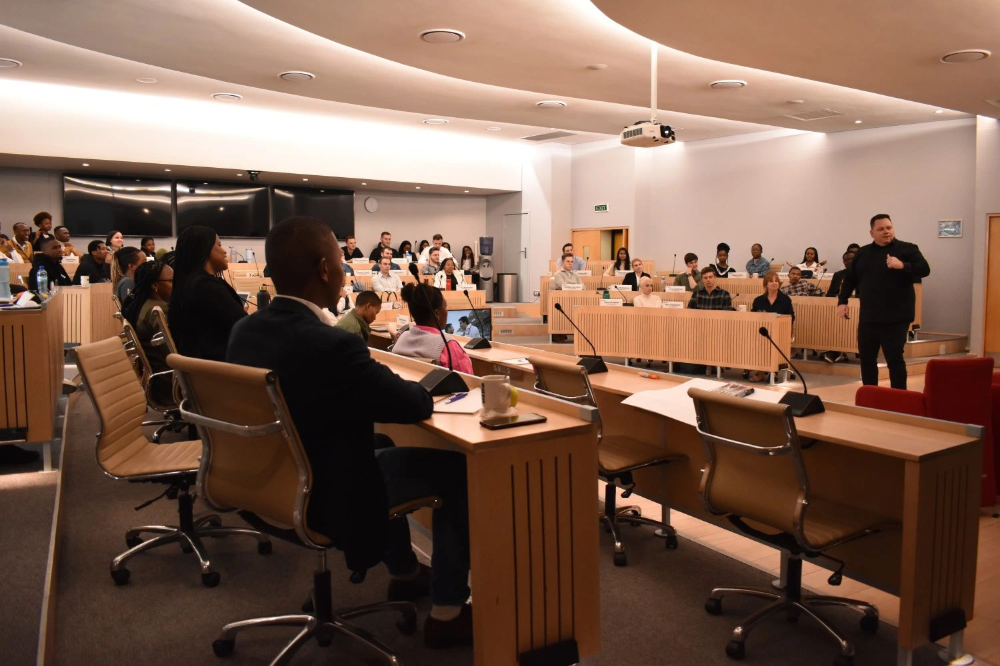
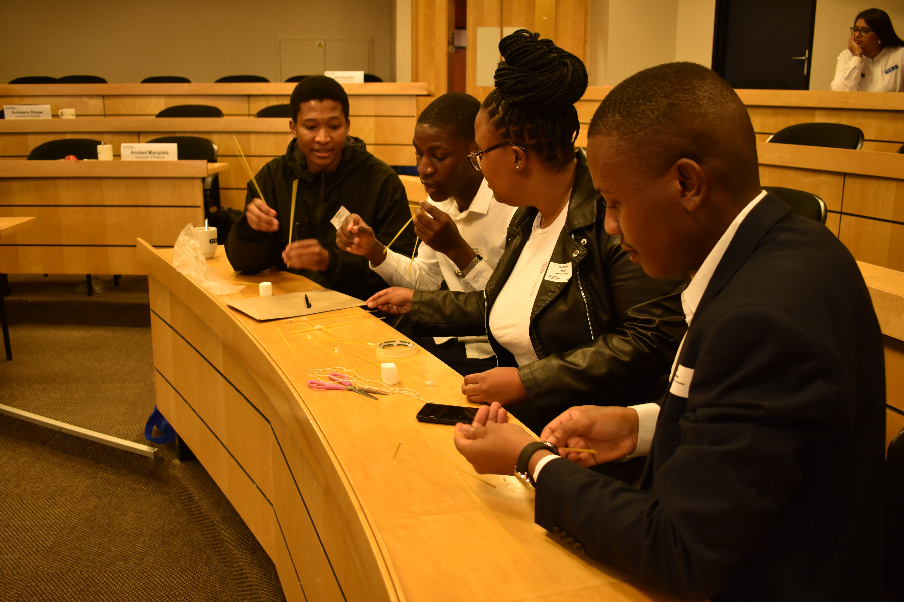
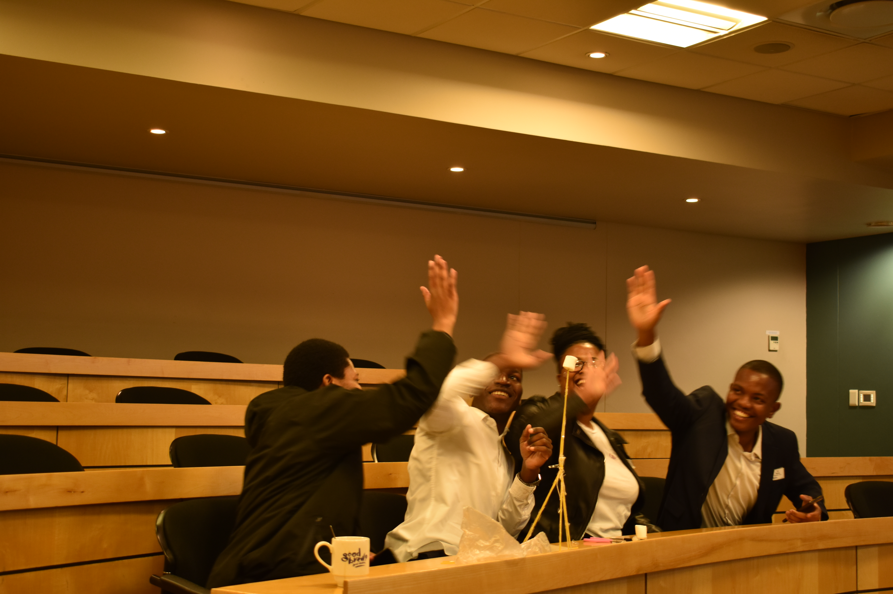
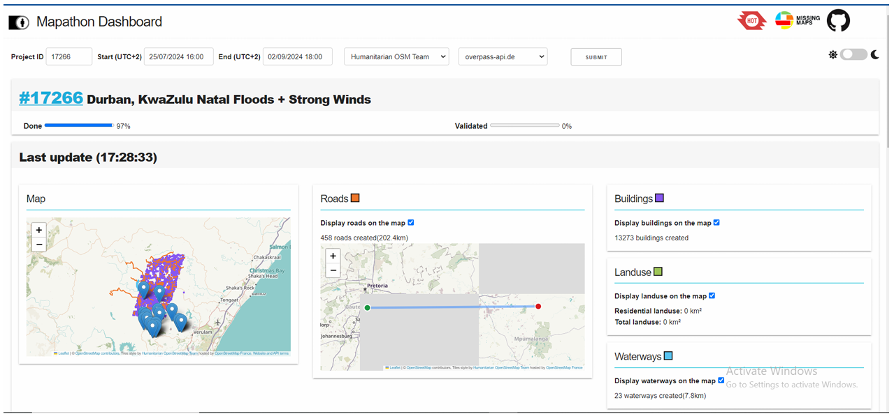
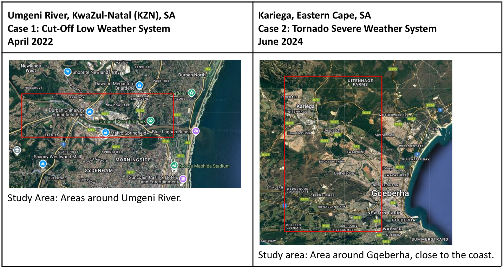
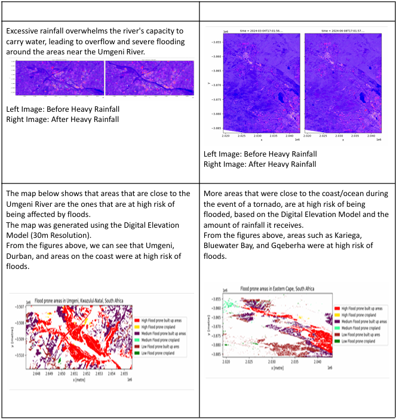
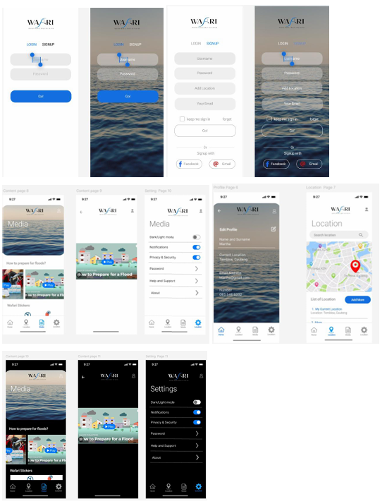
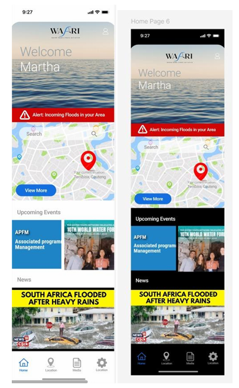

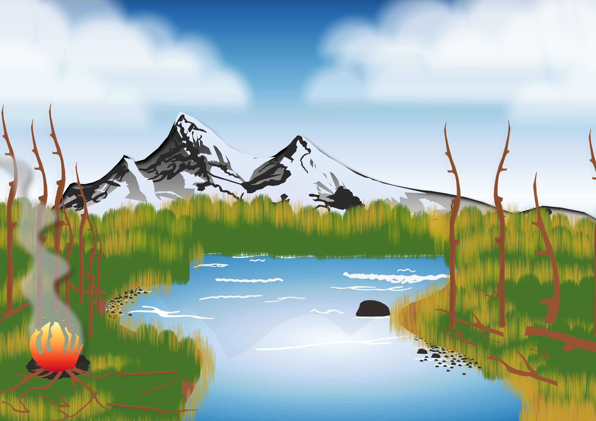
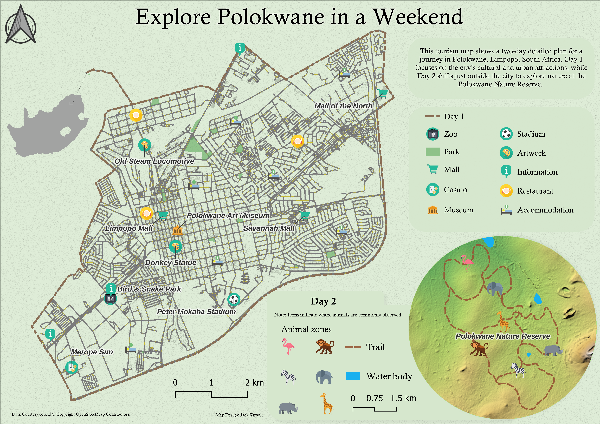
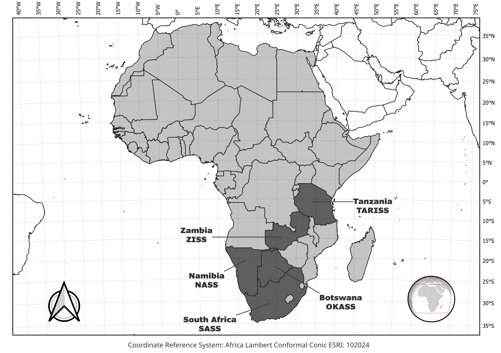
Awards, Scholarships & Funded Projects
Youth Changemaker Award (2023)
Global Water Partnership (GWP) · World Meteorological Organization (WMO) · Water Youth Network
Recognised for co-leading the Water From a Rock Initiative (WAFARI), a youth-led project promoting flood awareness and disaster preparedness across Africa. Presented at COP28.
MISA Full Academic Bursary (2024)
Municipal Infrastructure Support Agent · Department of Cooperative Governance (DCoG)
Full bursary awarded for studies in Geography and Environmental Science at the University of Pretoria, supporting training in sustainable infrastructure and local governance.